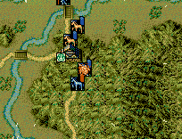

int カスタム::On_カスタム条件(string 条件名, カスタム条件パラメタ型 パラメタ) {
if ( 条件名 == "AS条件::戦争::突撃受動者死亡可否" ) {
}
// 変更しない場合-1
return -1;
}

int カスタム::On_カスタム条件(string 条件名, カスタム条件パラメタ型 パラメタ) {
if ( 条件名=="AS条件::戦争::突撃受動者死亡可否" ) {
デバッグ出力("AS条件::戦争::突撃受動者死亡可否");
int i武番Ａ【配】 = パラメタ.整数1 -1; // 整数1は突撃した武将の武将番号
int i武番Ｂ【配】 = パラメタ.整数2 -1; // 整数2は突撃された武将の武将番号
int 死亡結果 = パラメタ.整数3; // 現在予定されている死亡結果
// 武将１をチェックする。範囲外であれば、処理しない。-1。
if ( (0 <= i武番Ａ【配】 && i武番Ａ【配】< 最大数::武将情報::配列数) &&
(0 <= i武番Ｂ【配】 && i武番Ｂ【配】< 最大数::武将情報::配列数) ) {
デバッグ出力 << "能動武将番号:" << (int)i武番Ａ【配】 << "," << "受動武将番号:" << (int)i武番Ｂ【配】 << endl;
デバッグ出力 << "予定死亡結果:" << (int)死亡結果 << endl;
// 上杉謙信が突撃すると、受動者側が戦才80以上(天翔記の表示上で160以上)無いと、死亡確定
// 攻撃側は上杉謙信の顔番号
if ( p武将戸籍情報[i武番Ａ【配】].顔番号==26 )
{
// 防御側戦才 80 未満(天翔記表示で160未満)
if ( p武将情報[i武番Ｂ【配】].最大戦才 < 80 ) {
// 結果を受動側死亡とする。
return true;
}
}
}
// 条件に見合わなかった場合は、「AS条件::戦争::突撃受動者死亡可否」は元々の判定結果に委ねる。
}
// それ以外は条件を変えない。
return -1;
}